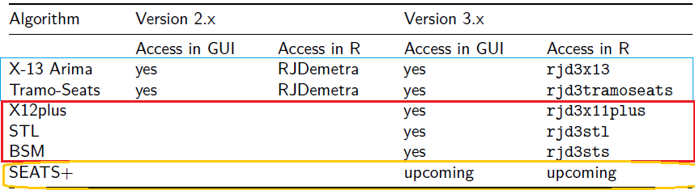

Seasonal Adjustment (SA) Overview
The goal of seasonal adjustment is to remove seasonal fluctuations from a time series. Seasonal fluctuations are quasi-periodic infra-annual movements. They can mask evolutions of greater interest for the user such as short term evolution or long time trends.
In this chapter
This chapter is a first of a series focusing on the practical step by step use of JDemetra+ Seasonal Adjustment (SA) algorithms, restricted to monthly and quarterly series. For infra-monthly data see the following chapter. In the sections below an overview of the seasonal adjustment process is provided. The most widely used SA algorithms (Tramo-Seats and X13-Arima) have two steps: a pre-treatment to remove (temporarily) deterministic effects and a decomposition phase to estimate the seasonal factors.
The following chapters get into the specifics of each algorithm.
- SA: pre-treatment
- SA: X11 decomposition
- SA: Seats-decomposition
- SA: STL decomposition
- SA with Basic Structural Models (BSM)
- SA of High-Frequency Data
The use of graphical user interface and R packages is described simultaneously whenever relevant.
In-depth methodological explanations of the algorithms are covered in separated chapters, in the Methods part of this book.
More information on the steps and best practices of a seasonal adjustment process can be found in the Eurostat guidelines on seasonal adjustment
For an overview on the algorithms and methodological issues, the user can refer to the Handbook on Seasonal Adjustment
SA process description
When setting up the process:
seasonality tests (can also be done in the frame of quality assessment at the end)
trading days correction set up if relevant
- regressors generation
- regressors selection
estimation with selected algorithm (see section below), might be automated with the cruncher
selective editing and manual fine tuning of parameters, re-estimation if needed
updating when new data available with tailored revision policy
Seasonal Adjustment Algorithms

Two categories of algorithms :
historical core (main): X-13-Arima and Tramo-Seats improved in version 3
version 3 additional algorithms (incubator)
X13-ARIMA and TRAMO-SEATS are two-step algorithms with a pre-treatment phase (Reg-Arima or Tramo) and a decomposition phase (X11 and Seats).
STL+ combines STL local regression based decomposition and a simplified Reg-Arima pre-treatment restricted to airline models.
X12+ combines X11 (enhanced) decomposition and a simplified Reg-Arima pre-treatment restricted to airline models.
Seats+ combines Seats decomposition and a simplified Reg-Arima pre-treatment restricted to airline models.
In a Structural Time Series approach pre-treatment and decomposition are done simultaneously in a State Space Framework.
Admissible data frequencies
For low frequency data - in version 3.x \(p\) in \({2,3,4,6,12}\) is admissible in all algorithms - in version 3.x \(p\) in \({2,3,4,6,12}\) is admissible in Tramo-Seats and \(p\) in \({2,4,12}\) is admissible in X-13.
Algorithms extended for high-frequency (infra-monthly) data can be applied to “any periodicity” in their R version and to \(p\) in \({7, 52.18, 365.25}\) in the graphical user interface, see here for more details.
Decomposition in unobserved components
To seasonally adjust a series, seasonal factors \(S_{t}\) will be estimated and removed from the original raw series: \(Y_{sa}=Y_{t}/S_{t}\) or \(Y_{sa}=Y_{t}-S_{t}\). To do so the series is first decomposed into unobservable components. Two decomposition models 1 are used in JDemetra+ :
The additive model: \(X_{t} = T_{t} + S_{t} + I_{t}\);
The multiplicative model: \(X_{t} = T_{t} \times S_{t} \times I_{t}\).
The main components, each representing the impact of certain types of phenomena on the time series (\(X_{t}\)), are:
The trend (\(T_{t}\)) that captures long-term and medium-term behaviour;
The seasonal component (\(S_{t}\)) representing intra-year fluctuations, monthly or quarterly, that are repeated more or less regularly year after year;
The irregular component (\(I_{t}\)) combining all the other more or less erratic fluctuations not covered by the previous components.
In general, the trend consists of 2 sub-components:
The long-term evolution of the series;
The cycle, that represents the smooth, almost periodic movement around the long-term evolution of the series. It reveals a succession of phases of growth and recession. Trend and cycle are not separated in SA algorithms.
Detecting seasonal patterns
A large number of seasonality tests are available in JDemetra+. They can be accessed in the graphical user interface or via R.
In R
In rjd3toolkit package:
- Canova-Hansen (
seasonality.canovahansen()) - X-12 combined test (
seasonality.combined()) - F-test on seasonal dummies (
seasonality.f()) - Friedman Seasonality Test (
seasonality.friedman()) - Kruskall-Wallis Seasonality Test (
seasonality.kruskalwallis()) - Periodogram Seasonality Test (
seasonality.periodogram()) - QS Seasonality Test (
seasonality.qs())
Full documentation of those functions can be found here
In GUI
How to perform tests in the graphical user interface is described here.
Direct or Indirect seasonal adjustment
when seasonally adjusting series which are aggregates following a given classification, the user has to chose whether directly adjust the aggregate from its raw version or to aggregate the adjusted components.
The graphical user interface in version 2.x provides a module to compare the two options. It won’t be provided in version 3.x.